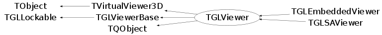

class TGLViewer: public TVirtualViewer3D, public TGLViewerBase, public TQObject
Base GL viewer object - used by both standalone and embedded (in pad) GL. Contains core viewer objects : GL scene - collection of main drawn objects - see TGLStdScene Cameras (fXyzzCamera) - ortho and perspective cameras - see TGLCamera Clipping (fClipXyzz) - collection of clip objects - see TGLClip Manipulators (fXyzzManip) - collection of manipulators - see TGLManip It maintains the current active draw styles, clipping object, manipulator, camera etc. TGLViewer is 'GUI free' in that it does not derive from any ROOT GUI TGFrame etc - see TGLSAViewer for this. However it contains GUI GUI style methods HandleButton() etc to which GUI events can be directed from standalone frame or embedding pad to perform interaction. Also, the TGLWidget needs to be created externally. It is not owned by the viewer. For embedded (pad) GL this viewer is created directly by plugin manager. For standalone the derived TGLSAViewer is.
Function Members (Methods)
public:
protected:
| static Int_t | TQObject::CheckConnectArgs(TQObject* sender, TClass* sender_class, const char* signal, TClass* receiver_class, const char* slot) |
| static Bool_t | TQObject::ConnectToClass(TQObject* sender, const char* signal, TClass* receiver_class, void* receiver, const char* slot) |
| static Bool_t | TQObject::ConnectToClass(const char* sender_class, const char* signal, TClass* receiver_class, void* receiver, const char* slot) |
| virtual void | TObject::DoError(int level, const char* location, const char* fmt, va_list va) const |
| void | FadeView(Float_t alpha) |
| TGLViewerBase::SceneInfoList_i | TGLViewerBase::FindScene(TGLSceneBase* scene) |
| virtual void* | TQObject::GetSender() |
| virtual const char* | TQObject::GetSenderClassName() const |
| void | InitGL() |
| void | MakeCurrent() const |
| void | TObject::MakeZombie() |
| void | PostDraw() |
| void | PreDraw() |
| void | SetupCameras(Bool_t reset) |
| virtual void | SetupClipObject() |
| void | SetViewport(const TGLRect& vp) |
| void | SetViewport(Int_t x, Int_t y, Int_t width, Int_t height) |
| void | TGLViewerBase::SubRenderScenes(TGLViewerBase::SubRender_foo render_foo) |
| void | SwapBuffers() const |
Data Members
public:
| enum ECameraType { | kCameraPerspXOZ | |
| kCameraPerspYOZ | ||
| kCameraPerspXOY | ||
| kCameraOrthoXOY | ||
| kCameraOrthoXOZ | ||
| kCameraOrthoZOY | ||
| kCameraOrthoXnOY | ||
| kCameraOrthoXnOZ | ||
| kCameraOrthoZnOY | ||
| }; | ||
| enum ESecSelType { | kOnRequest | |
| kOnKeyMod1 | ||
| }; | ||
| enum EPushAction { | kPushStd | |
| kPushCamCenter | ||
| kPushAnnotate | ||
| }; | ||
| enum EDragAction { | kDragNone | |
| kDragCameraRotate | ||
| kDragCameraTruck | ||
| kDragCameraDolly | ||
| kDragOverlay | ||
| }; | ||
| enum TObject::EStatusBits { | kCanDelete | |
| kMustCleanup | ||
| kObjInCanvas | ||
| kIsReferenced | ||
| kHasUUID | ||
| kCannotPick | ||
| kNoContextMenu | ||
| kInvalidObject | ||
| }; | ||
| enum TObject::[unnamed] { | kIsOnHeap | |
| kNotDeleted | ||
| kZombie | ||
| kBitMask | ||
| kSingleKey | ||
| kOverwrite | ||
| kWriteDelete | ||
| }; | ||
| enum TGLLockable::ELock { | kUnlocked | |
| kDrawLock | ||
| kSelectLock | ||
| kModifyLock | ||
| }; |
protected:
| TGLAutoRotator* | fAutoRotator | ! |
| Bool_t | fAxesDepthTest | ! remove guides hidden-lines |
| Int_t | fAxesType | ! axes type |
| TGLCamera* | TGLViewerBase::fCamera | Camera for rendering. |
| TGLCameraOverlay* | fCameraOverlay | ! markup size of viewport in scene units |
| Bool_t | TGLViewerBase::fChanged | Change requiring redraw is pending. |
| TGLClip* | TGLViewerBase::fClip | Viewer clipping-plane. |
| TGLClipSet* | fClipSet | ! |
| TContextMenu* | fContextMenu | ! |
| TGLCamera* | fCurrentCamera | ! |
| TGLOverlayElement* | fCurrentOvlElm | ! current overlay element |
| TGLSelectRecord | fCurrentSelRec | ! select record in use as selected |
| TGLColorSet | fDarkColorSet | ! color-set with dark background |
| Bool_t | fDebugMode | ! debug mode (forced rebuild + draw scene/frustum/interest boxes) |
| TGLViewer::EDragAction | fDragAction | |
| Bool_t | fDrawCameraCenter | ! reference marker on? |
| TGEventHandler* | fEventHandler | ! event handler |
| Float_t | fFader | ! fade the view (0 - no fade/default, 1 - full fade/no rendering done) |
| TGLContextIdentity* | fGLCtxId | !for embedded gl viewer |
| Int_t | fGLDevice | !for embedded gl viewer |
| TGLWidget* | fGLWidget | |
| TGedEditor* | fGedEditor | ! GED editor |
| Bool_t | fIgnoreSizesOnUpdate | ignore sizes of bounding-boxes on update |
| Bool_t | fIsPrinting | ! |
| Short_t | TGLViewerBase::fLOD | Viewer-lod for rendering. |
| TGLColorSet | fLightColorSet | ! color-set with light background |
| TGLLightSet* | fLightSet | ! |
| Float_t | fLineScale | ! width scale for lines |
| TList* | TQObject::fListOfConnections | ! list of connections to this object |
| TList* | TQObject::fListOfSignals | ! list of signals from this object |
| TGLLockable::ELock | TGLLockable::fLock | Lock state. |
| Float_t | fMaxSceneDrawTimeHQ | ! max time for scene rendering at high LOD (in ms) |
| Float_t | fMaxSceneDrawTimeLQ | ! max time for scene rendering at high LOD (in ms) |
| Float_t | TGLViewerBase::fOLLineW | Optional override of scene outline line-width |
| TGLOrthoCamera | fOrthoXOYCamera | ! |
| TGLOrthoCamera | fOrthoXOZCamera | ! |
| TGLOrthoCamera | fOrthoXnOYCamera | ! |
| TGLOrthoCamera | fOrthoXnOZCamera | ! |
| TGLOrthoCamera | fOrthoZOYCamera | ! |
| TGLOrthoCamera | fOrthoZnOYCamera | ! |
| TGLBoundingBox | TGLViewerBase::fOverallBoundingBox | Axis-aligned union of scene bboxes. |
| vector<TGLOverlayElement*> | TGLViewerBase::fOverlay | |
| TGLOvlSelectRecord | fOvlSelRec | ! select record from last overlay select |
| TGLPShapeObj* | fPShapeWrap | |
| TVirtualPad* | fPad | ! external pad - remove replace with signal |
| TGLPerspectiveCamera | fPerspectiveCameraXOY | ! |
| TGLPerspectiveCamera | fPerspectiveCameraXOZ | ! |
| TGLPerspectiveCamera | fPerspectiveCameraYOZ | ! |
| TString | fPictureFileName | ! default file-name for SavePicture() |
| Float_t | fPointScale | ! size scale for points |
| TGLViewer::EPushAction | fPushAction | |
| TGLRedrawTimer* | fRedrawTimer | ! timer for triggering redraws |
| Bool_t | fReferenceOn | ! reference marker on? |
| TGLVertex3 | fReferencePos | ! reference position |
| Bool_t | fResetCamerasOnNextUpdate | reposition camera on next update |
| Bool_t | fResetCamerasOnUpdate | reposition camera on each update |
| Bool_t | TGLViewerBase::fResetSceneInfosOnRender | Request rebuild of view-specific scene data. |
| TGLRnrCtx* | TGLViewerBase::fRnrCtx | |
| list<TGLSceneInfo*> | TGLViewerBase::fScenes | Registered scenes. |
| TGLSelectRecord | fSecSelRec | ! select record from last secondary select (should go to context) |
| TGLSelectRecord | fSelRec | ! select record from last select (should go to context) |
| TGLManipSet* | fSelectedPShapeRef | ! |
| Bool_t | TQObject::fSignalsBlocked | ! flag used for suppression of signals |
| Bool_t | fSmartRefresh | ! cache logicals during scene rebuilds |
| Bool_t | fSmoothLines | ! smooth line edge rendering |
| Bool_t | fSmoothPoints | ! smooth point edge rendering |
| Bool_t | fStereo | ! use stereo rendering |
| Float_t | fStereoEyeOffsetFac | ! |
| Float_t | fStereoFrustumAsymFac | ! |
| Float_t | fStereoZeroParallax | ! position of zero-parallax plane: 0 - near clipping plane, 1 - far clipping plane |
| Short_t | TGLViewerBase::fStyle | Viewer-style for rendering. |
| TGLRect | fViewport | ! viewport - drawn area |
| vector<TGLSceneInfo*> | TGLViewerBase::fVisScenes | Visible scenes. |
| Float_t | TGLViewerBase::fWFLineW | Optional override of scene wire-frame line-width |
| static Bool_t | TQObject::fgAllSignalsBlocked | flag used for suppression of all signals |
| static TGLColorSet | fgDefaultColorSet | ! a shared, default color-set |
| static Bool_t | fgUseDefaultColorSetForNewViewers | ! name says it all |
Class Charts
{kind=link}
{kind=link}
{kind=link}
{kind=link}

Function documentation
TGLViewer(TVirtualPad* pad, Int_t x, Int_t y, Int_t width, Int_t height)
Construct the viewer object, with following arguments:
'pad' - external pad viewer is bound to
'x', 'y' - initial top left position
'width', 'height' - initial width/height
TGLViewer(TVirtualPad* pad)
gl-embedded viewer's ctor
Construct the viewer object, with following arguments:
'pad' - external pad viewer is bound to
'x', 'y' - initial top left position
'width', 'height' - initial width/height
void PadPaint(TVirtualPad* pad)
Entry point for updating viewer contents via VirtualViewer3D interface. We search and forward the request to appropriate TGLScenePad. If it is not found we create a new TGLScenePad so this can potentially also be used for registration of new pads.
void UpdateScene(Bool_t redraw = kTRUE)
Force update of pad-scenes. Eventually this could be generalized to all scene-types via a virtual function in TGLSceneBase.
void RequestDraw(Short_t LOD = TGLRnrCtx::kLODMed)
Post request for redraw of viewer at level of detail 'LOD' Request is directed via cross thread gVirtualGL object.
Bool_t SavePicture()
Save current image using the defualt file name which can be set via SetPictureFileName() and defaults to "viewer.jpg". Really useful for the files ending with 'gif+'.
Bool_t SavePicture(const TString& fileName)
Save current image in various formats (gif, gif+, jpg, png, eps, pdf). 'gif+' will append image to an existng file (animated gif). 'eps' and 'pdf' do not fully support transparency and texturing. The viewer window most be fully contained within the desktop but can be covered by other windows. Returns false if something obvious goes wrong, true otherwise. The mage is saved using a frame-buffer object if the GL implementation claims to support it -- this claim is not always true, especially when running over ssh with drastically different GL implementations on the client and server sides. Set this in .rootrc to enforce creation of pictures using the back-buffer: OpenGL.SavePicturesViaFBO: off
Bool_t SavePictureUsingBB(const TString& fileName)
Save current image in various formats (gif, gif+, jpg, png). 'gif+' will append image to an existng file (animated gif). Back-Buffer is used for capturing of the image. The viewer window most be fully contained within the desktop but can be covered by other windows. Returns false if something obvious goes wrong, true otherwise.
Bool_t SavePictureUsingFBO(const TString& fileName, Int_t w, Int_t h, Float_t pixel_object_scale = 0)
Save current image in various formats (gif, gif+, jpg, png). 'gif+' will append image to an existng file (animated gif). Frame-Buffer-Object is used for capturing of the image - OpenGL 1.5 is required. The viewer window does not have to be visible at all. Returns false if something obvious goes wrong, true otherwise. pixel_object_scale is used to scale (as much as possible) the objects whose representation size is pixel based (point-sizes, line-widths, bitmap/pixmap font-sizes). If set to 0 (default) no scaling is applied.
Bool_t SavePictureWidth(const TString& fileName, Int_t width, Bool_t pixel_object_scale = kTRUE)
Save picture with given width (height scaled proportinally). If pixel_object_scale is true (default), the corresponding scaling gets calculated from the current window size.
Bool_t SavePictureHeight(const TString& fileName, Int_t height, Bool_t pixel_object_scale = kTRUE)
Save picture with given height (width scaled proportinally). If pixel_object_scale is true (default), the corresponding scaling gets calculated from the current window size.
Bool_t SavePictureScale(const TString& fileName, Float_t scale, Bool_t pixel_object_scale = kTRUE)
Save picture with given scale to current window size. If pixel_object_scale is true (default), the same scaling is used.
void FadeView(Float_t alpha)
Draw a rectangle (background color and given alpha) across the whole viewport.
Bool_t RequestSelect(Int_t x, Int_t y)
Post request for selection render pass viewer, picking objects around the window point (x,y).
void ApplySelection()
Process result from last selection (in fSelRec) and extract a new current selection from it. Here we only use physical shape.
Bool_t RequestOverlaySelect(Int_t x, Int_t y)
Post request for secondary selection rendering of selected object around the window point (x,y).
Bool_t DoOverlaySelect(Int_t x, Int_t y)
Perform GL selection, picking overlay objects only. Return TRUE if the selected overlay-element has changed.
void AutoFade(Float_t fade, Float_t time = 1, Int_t steps = 10)
Animate fading from curernt value to fade over given time (sec) and number of steps.
Bool_t IsUsingDefaultColorSet() const
Check if the viewer is using the default color set. If yes, some operations might be disabled.
void SetClearColor(Color_t col)
Set background method. Deprecated method - set background color in the color-set.
void UseDefaultColorSetForNewViewers(Bool_t x)
Sets static flag that determines if new viewers should use the default color-set. This is false at startup.
Bool_t IsUsingDefaultColorSetForNewViewers()
Returns the value of the static flag that determines if new viewers should use the default color-set. This is false at startup.
void SetViewport(Int_t x, Int_t y, Int_t width, Int_t height)
Set viewer viewport (window area) with bottom/left at (x,y), with
dimensions 'width'/'height'
void SetCurrentCamera(TGLViewer::ECameraType camera)
Set current active camera - 'cameraType' one of: kCameraPerspX, kCameraPerspY, kCameraPerspZ, kCameraOrthoXOY, kCameraOrthoXOZ, kCameraOrthoZOY, kCameraOrthoXnOY, kCameraOrthoXnOZ, kCameraOrthoZnOY
void SetOrthoCamera(TGLViewer::ECameraType camera, Double_t zoom, Double_t dolly, Double_t* center, Double_t hRotate, Double_t vRotate)
Set an orthographic camera to supplied configuration - note this does not need to be the current camera - though you will not see the effect if it is not. 'camera' defines the ortho camera - one of kCameraOrthoXOY / XOZ / ZOY 'left' / 'right' / 'top' / 'bottom' define the WORLD coordinates which corresepond with the left/right/top/bottom positions on the GL viewer viewport E.g. for kCameraOrthoXOY camera left/right are X world coords, top/bottom are Y world coords As this is an orthographic camera the other axis (in eye direction) is no relevant. The near/far clip planes are set automatically based in scene contents
void SetPerspectiveCamera(TGLViewer::ECameraType camera, Double_t fov, Double_t dolly, Double_t* center, Double_t hRotate, Double_t vRotate)
Set a perspective camera to supplied configuration - note this does not need to be the current camera - though you will not see the effect if it is not. 'camera' defines the persp camera - one of kCameraPerspXOZ, kCameraPerspYOZ, kCameraPerspXOY 'fov' - field of view (lens angle) in degrees (clamped to 0.1 - 170.0) 'dolly' - distance from 'center' 'center' - world position from which dolly/hRotate/vRotate are measured camera rotates round this, always facing in (in center of viewport) 'hRotate' - horizontal rotation from initial configuration in degrees 'hRotate' - vertical rotation from initial configuration in degrees
void SetAutoRotator(TGLAutoRotator* ar)
Set the auto-rotator for this viewer. The old rotator is deleted.
void GetGuideState(Int_t& axesType, Bool_t& axesDepthTest, Bool_t& referenceOn, Double_t* referencePos) const
Fetch the state of guides (axes & reference markers) into arguments
void SetGuideState(Int_t axesType, Bool_t axesDepthTest, Bool_t referenceOn, const Double_t* referencePos)
Set the state of guides (axes & reference markers) from arguments.
Int_t DistancetoPrimitive(Int_t px, Int_t py)
Calcaulate and return pixel distance to nearest viewer object from window location px, py This is provided for use when embedding GL viewer into pad
void ExecuteEvent(Int_t event, Int_t px, Int_t py)
Process event of type 'event' - one of EEventType types, occuring at window location px, py This is provided for use when embedding GL viewer into pad
void SetEventHandler(TGEventHandler* handler)
Set the event-handler. The event-handler is owned by the viewer. If GLWidget is set, the handler is propagated to it. If called with handler=0, the current handler will be deleted (also from TGLWidget).
void ClearCurrentOvlElm()
Reset current overlay-element to zero, eventually notifying the old one that the mouse has left. Usually called when mouse leaves the window.
Bool_t CanLoopOnPrimitives() const
TVirtualViewer3D interface ... mostly a facade Forward to TGLScenePad
{ return kTRUE; }Bool_t PreferLocalFrame() const
Only implemented because they're abstract ... should throw an exception or assert they are not called.
{ return kTRUE; }Float_t GetMaxSceneDrawTimeHQ() const
Draw and selection Scene rendering timeouts
{ return fMaxSceneDrawTimeHQ; }